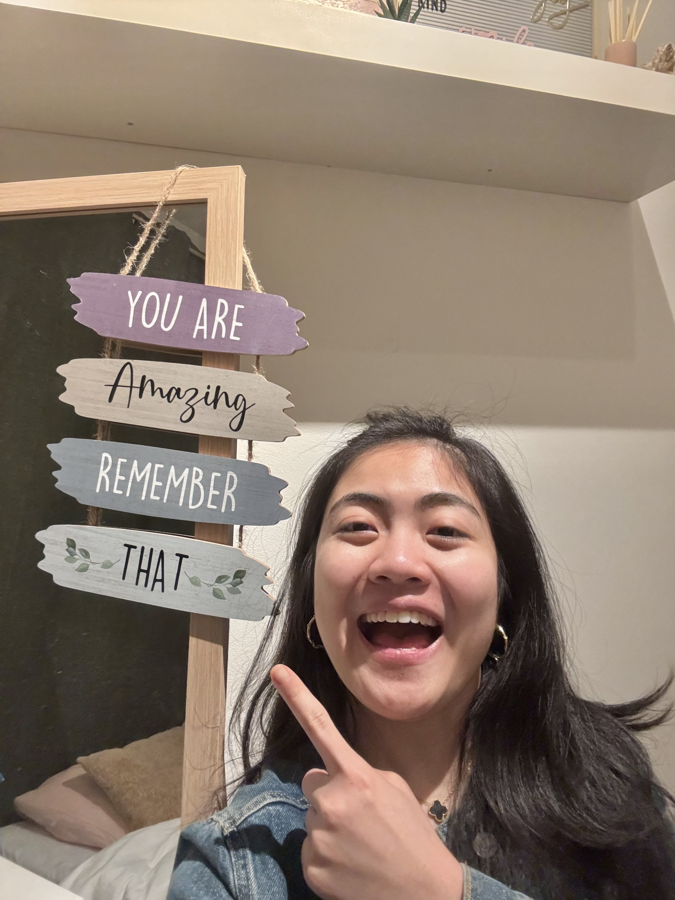

Hi there.
Hi, I’m Natalia from East Java, Indonesia. As a Data Analyst with a background in ICT and Business, I offer a unique blend of skills from my previous experience as a Business Analyst and my current role, Data Analyst. I bring experience in analytical skills such as identifying business requirement, analyzing business processes, and visualizing business flows. My analytical skills have been further refined through numerous data analysis projects completed during my Data Analytics Bootcamp.

Me and data analytics.
I’ve always been fascinated by the stories that numbers can tell. My journey as a Data Analyst Bootcamper has equipped me with the tools to turn raw data into meaningful insights. With skills in Excel, SQL, Python, and Tableau under my belt, I thrive on the challenge of cleaning and manipulating data to uncover hidden patterns that can drive strategic decisions. My experience has taught me the importance of being detail-oriented while keeping an eye on the bigger picture. Whether it's identifying trends through SQL queries or crafting compelling visualizations in Tableau, I find joy in every step of the process. I am particularly passionate about using these skills to find data-driven solutions that make a real difference in decision-making.
 What makes me different?
What makes me different?
In addition to my passion for data visualization, I am also a detail oriented and math lover. My attention to detail helps me analyze data carefully, while my love for math makes challenging calculations and statistics enjoyable. As part of my personality, most of my friends say that I am a cheerful and positive person. I consider myself a fast learner where I try to do things with excellence and will put extra miles in it. I value humility and integrity. I learn to do right things not because someone is watching me but because of who I am. Here I am willing to learn something new, humbly accept feedback, and be corrected if I make a mistake. In my daily free time, I enjoy playing with my guitar and occasionally writing my own blogs or songs. Other hobbies are playing chess, cubes, and drawing.